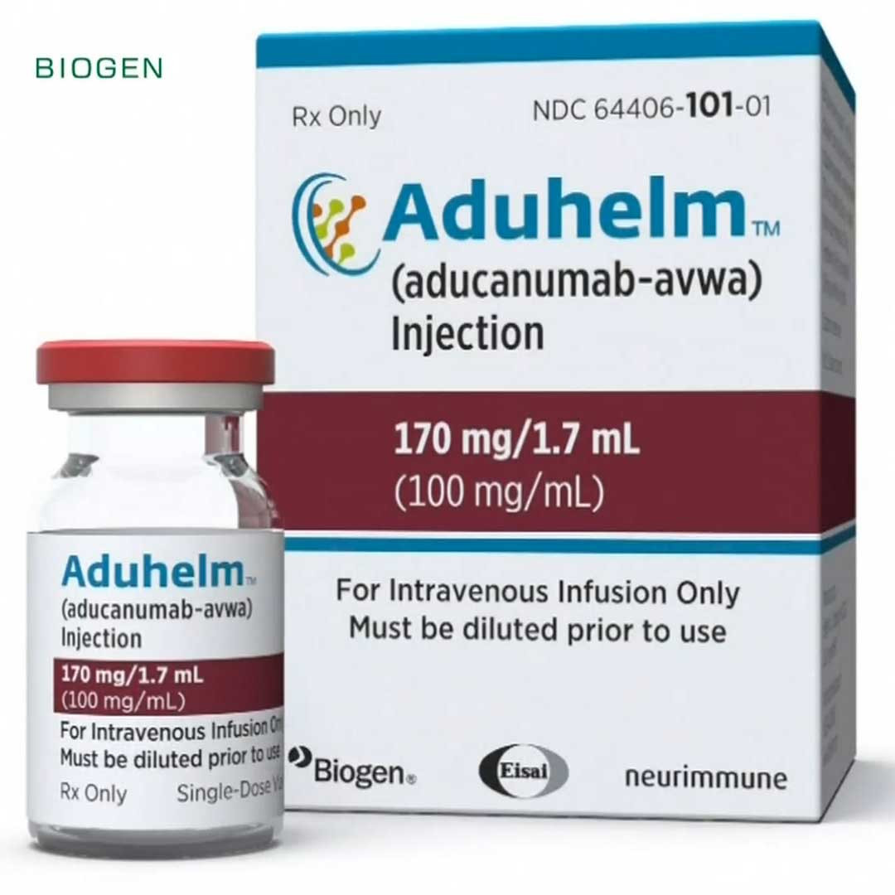

Отечественный препарат для улучшения памяти и защиты мозга от болезни Альцгеймера прошел эксперименты на лабораторных мышах, показав свою эффективность. Новый российский препарат от болезни Альцгеймера (возрастного нейродегенеративного заболевания, связанного с ослаблением умственных способностей) разработали в Санкт-Петербургском политехническом университете Петра Великого.
Лекарство успешно прошло исследования у мышей, имеющих проблемы с памятью, сообщает ТАСС со ссылкой на пресс-службу Политеха. Задача нового лекарства — ограничить характерную для заболевания утрату связей между нейронами и, таким образом, помочь мозгу сохранить память, отсрочив наступление болезни Альцгеймера.
Об этом рассказала старший научный сотрудник Лаборатории молекулярной нейродегенерации Института биомедицинских систем и биотехнологий СПбПУ Елена Попугаева. В ходе эксперимента с грызунами стало ясно, что, попав в организм, лекарственные соединения успешно преодолели гемостатический барьер, достигли до мозга и оказали положительное влияние на клетки. Память после этого вернулась. В дальнейшем разработчики планируют исследования препарата на токсичность и мутацию. До начала клинических исследований у людей они также проверят лекарство на возможные побочные действия. Препаратов, способных предотвратить болезнь Альцгеймера — одну из наиболее тяжелых форм старческого слабоумия (деменции), — пока немного. Между тем, эта ниша становится очень востребованной по мере роста численности стареющего населения на фоне увеличения продолжительности жизни в развитых странах. В апреле 2022 года в России уже зарегистрировали отечественный инновационный препарат МИОРЕОЛ разработки «НоваМедика». Лекарство состоит из комбинации двух молекул и является первым препаратов своего класса на рынке России и других стран ЕАЭС. Также в нашей стране разрабатывают природный антидепрессант на основе экстракта барвинка, который будет бороться с болезнью Альцгеймера и другими возрастными расстройствами нервной системы. Это тоже уникальный препарат в своем роде выпускать его планирует отечественная компания «Р-Фарм». Растения — не единственный источник лекарственных соединений, способных не допустить ослабления умственных способностей. Ученые Курчатовского института доказали, что лечить деменцию можно с помощью астаксантина — природного вещества, которым богата красная рыба. Это соединение тоже проверили на мышах, у которых оно улучшило память и другие мозговые функции. Еще одно научное учреждение в Санкт-Петербурге — Институт биорегуляции и геронтологии — тоже разрабатывает лекарство от этой болезни, но уже на основе пептидов. Это белковые соединения, состоящие из аминокислот. Оно также успешно прошло исследования на животных, и после 2022 года разработчики планировали перейти к его клиническим исследованиям. Между тем, в США в начале января одобрили спорный препарат для лечения болезни Альцгеймера — Leqembi (Леканемаб) разработки японской фармацевтической компания Eisai. Он создан на основе моноклональных антител. Ранние итоги клинических исследований третьей фазы показали его эффективность и даже прорывной потенциал. Но по мере изучения данных расширенной третьей фазы у ученых возникли сомнения в эффективности и безопасности препарата, тем более, что несколько принимавших его пациентов скончались. Некоторые эксперты писали письма регулятору с просьбой запретить его прием. Это уже второй случай в Америке. В 2021 году там одобрили лекарство от болезни Альцгеймера Aduhelm компании Biogen. Его эффективность так и не была подтверждена в достаточной мере клиническими исследованиями, а частные страховые компании даже отказались включать его в свои программы. Вернутся на главную